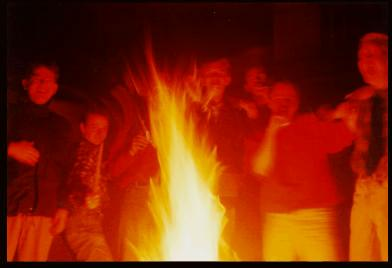

| Terug naar welkomstpagina! |

't Los Hoes, Kromme Heut, Verhaaltje
Lang, heel lang geleden, toen collegekaarten van de Technische Universiteit Delft nog zelf in elkaar geknutseld moesten worden en daardoor het hele systeem nog lekker simpel was, werd er een nieuw C.S.R.-huis door een aantal verse studenten opgericht met maar één doel: dit doel is helaas in de vergetelheid geraakt en niemand weet er dan ook meer het fijne van.

Wel kan er opgemerkt worden dat het huis diverse kenmerken bezat die te maken hadden met het tussen twee haakjes toch wel erg mooie Twente. Zo zaten er in het huis Tukkers, lag er in de koelkasten Grolsch, op de broodplank 'stoet' en droeg het huis de naam "'t Los Hoes".
Het leek allemaal zo leuk. Maar helaas, in dit calvinistisch ingestelde landje bleek ook hier weer dat aan al dat goede een eind moest komen. Op het punt dat de populariteit van 't Los Hoes bij de andere C.S.R.-huizen op zijn hoogtepunt was en de bewoners in aanzien stonden bij de verenigingsleden, besloot de huisbaas er een eind aan te maken. Hij ging verder van Delft wonen en zo legaal was dat onderhuren eigenlijk niet (hij woonde er zelf niet!!).
Hij verklaarde van het huis af te willen en wij moesten binnen 9 maanden (!!! Goede huisbaas, waar vind je die nog?) een nieuw onderkomen zoeken. Wij dus de straat op op zoek. Sommigen van ons zochten hun heil elders. Maar een aantal bleven strijden voor een onafhankelijk huis. Zo kwamen wij op het spoor van - en let nu goed op: de heer Declemy van het kamerbemiddelingsbureau Home-lets Housing Agency (braak, braak) aan het Oosteinde. Deze meneer zou alles voor ons regelen, zelfs mochten wij enige eisen op tafel leggen. Maar de heer Declemy bleek wat onze eisen betreft een beetje vergeetachtig en bij deze willen wij jullie dan ook waarschuwen voor deze man (beschrijving: paardrijkleding). Uiteindelijk smeert hij ons dan toch een huisje aan tegen de nodige vergoedingen (waarvoor?): Kromme Heut is geboren.
 Gelegen in de bocht van de oude vaart naar Delfgauw, daar ligt ons huis. De aloude benaming van deze plek luidt: "Kromme Heut", vandaar onze naam. Dit huis heeft de goede tradities van 't Los Hoes overgenomen.
Gelegen in de bocht van de oude vaart naar Delfgauw, daar ligt ons huis. De aloude benaming van deze plek luidt: "Kromme Heut", vandaar onze naam. Dit huis heeft de goede tradities van 't Los Hoes overgenomen.
De Kromme Heut is een alliantie aangegaan met andere, in de Wippolder gelegen, studentenhuizen: OHIOH! en De Buren/Triple Mistig onder de naam De Gouden Driehoek. Voornaamste doel is elkaar te steunen in deze prachtige volksbuurt (tegen de Slopers van Vestia...).
De Gouden Driehoek heeft al heel wat gouden momenten meegemaakt. Helaas zal de Driehoek niet in stand gehouden kunnen worden. De slopershamer van Vestia zal Triple Mistig begin volgend jaar doen verdwijnen en in 2003 OHIOH! . Ook Kromme Heut zal roemloos tenonder gaan aan de handen van de huisbaas na de verhuizing van de bewoners.
Onlangs is Hans reeds verhuisd en als de DuWo een beetje meezit, zullen ook Wilmar en Gerben het pand verlaten. Ze zullen zich gaan hergroeperen in een unieke bezetting, c.q. met Daniël (oud-bewoner 't Los Hoes) en met William (een Grolsch-kenner bij uitstek). De naam van het nieuwe huis blijft voorlopig geheim!
Een verhaaltje uit onze grote duim...
Vroeger, heel lang geleden, toen Pasen en Pinksteren nog niet eens bestonden, laat staan op één dag zouden kunnen vallen, lagen er op de plaats van de huidige universiteitsstad Delft slechts onaantrekkelijke gorzen en veenmoerassen. Eb en vloed hadden er nog vrij spel in killen en kreken en allerlei ongedierte werd nog niet bestreden door welke gemeentereinigingsdienst dan ook.
Op een gegeven moment, als Pasen en Pinksteren inmiddels bekende begrippen zijn geworden, besluit men de hele zooi droog te malen, waarvan echter een al even onaantrekkelijke polder het resultaat is. Gelukkig voor ons, onstaat er langs een van de vele sloten, de Delf genaamd, een pittoresk stadje, dat een welkome afwisseling in de leegte vormt. Zo welkom echter, dat een verdediging tegen de in die tijd beruchte "Barbaren van Delfgaauw" nodig blijkt te zijn. Op een strategisch punt, de bocht in de vaart naar Delfgaauw, wordt een grootse vesting gebouwd, vanwege de kromming in de vaart "Kromme Heut" genoemd. Omdat het leven niet uit vechten alleen bestaat, ontstaat er tijdens de kerstening van Holland op de andere kade tevens een klooster.
Eeuwen later, ongeveer 2000 jaar nadat duidelijk was geworden dat Pasen en Pinksteren niet op dezelfde dag vallen, blijkt de vesting te zijn vervangen door een brede verdedigingswal, die zich uitstrekt van Den Haag tot Rotterdam. Deze wal, de A13 genaamd, heeft naast een verdedigende functie, ook een transporterende. Zodoende hebben niet alleen busladingen vol Japanners Delft optdekt, maar zijn ook de huidige bewoners van het op de fundamenten van de oude vesting gebouwde studentenhuis, dat tevens de naam heeft overgenomen, in staat gesteld zich vanuit het Oosten in Delft te vestigen.De oude, stereotiepe vijanden van weleer hebben inmiddels plaats gemaakt voor moderne varianten, zoals Sjonnies en Anita's, en de Slopers van Vestia. Kromme Heut heeft om stand te kunnen houden, daar in die rauwe, ongure Wippolder een alliantie gevormd met nabijgelegen steunpunten onder de naam: "De Gouden Driehoek". Gestationeerd aan het front met de wrede kolossen in de nabijgelegen Technology-and-Science-polder van de TU, zijn daar in de eerste plaats de ervaren helden van OHIOH. Eveneens onmisbaar voor de solide Driehoek zijn onze "gevleugde" L&R-vrienden van "De Buren/Triple Mistig".
In de toekomst, als de slopershamer tierig weelt, zal de Driehoek verlaten moeten worden, maar hopelijk zal elke bewoner ook dan nog gelukkig en natuurlijk ook lang leven.
| Terug naar welkomstpagina! | vervaardigd 30-08-97 door Kromme Heut |